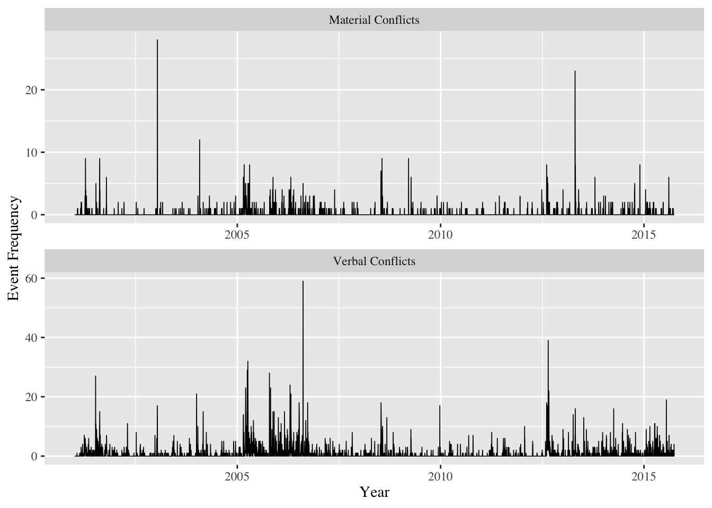

Ritualized Hostility
1 Setup & Data Structure
1.1 CAMEO Coding Scheme
To translate CAMEO coding scheme into four more general categories, I rely on the mapping below for recoding.
Because the entire volume of ICEWS is huge, I use the latest IECWS data (2017 January) events.2016.20170206134701.tab to test the steps of data manipulation before fully implementing all the methods.
I did the following tasks:
- Selecte only events which Japan or South Korea was the source or target.
- Eliminate purely domestic events where Japan or South Korea were both the Source Country and the Target Country.
- Recode the
CAMEOCode into 4 categories with the mapping shown above. - Make
category(0,1,2,3,4) a factor variable andtimeas a time variable. - Generate a variable that records the directionality of each event.
1.2 Reading ICEWS Raw Data
1.2.1 ICEWS Parser Function
1.2.2 Data for Replication
Due to the large size and amount of time required to read, process, and merge the original .tab files, I export the results from the previous code chunk into a .csv file and read it directly, as shown below.
1.3 Distribution of Data over Year
There are some issue with the R parser that leads to strange event counts compared to STATA.

1.4 Using STATA
By contrast, STATA’s parser has no issue with 2007, as shown in the graph. The remaining analysis will be conducted on the ICEWS data read in STATA.
## Parsed with column specification:
## cols(
## .default = col_character(),
## eventid = col_integer(),
## eventdate = col_date(format = ""),
## cameocode = col_integer(),
## intensity = col_double(),
## storyid = col_integer(),
## sentencenumber = col_integer(),
## latitude = col_double(),
## longitude = col_double(),
## J2K = col_integer(),
## K2J = col_integer()
## )## See spec(...) for full column specifications.
1.5 Distribution of Event Categories
One can see the distrubtion of event categories:
| category | n |
|---|---|
| 0 | 6007 |
| 1 | 38992 |
| 2 | 353 |
| 3 | 4421 |
| 4 | 1031 |
| 5 | 19 |
While in events each row is an event, I want each row to be a particular date with information of the frequency of an event of a particular type on that date.
1.6 Daily Data
Now I reshape the data frame to make each event category its own coloumn for Time Series analysis.
| time | neutral | ver_coop | mat_coop | ver_conf | mat_conf |
|---|---|---|---|---|---|
| 1996-01-03 | 0 | 2 | 0 | 0 | 0 |
| 1996-01-04 | 0 | 0 | 0 | 0 | 0 |
| 1996-01-05 | 0 | 0 | 0 | 0 | 0 |
| 1996-01-06 | 0 | 0 | 0 | 0 | 0 |
| 1996-01-07 | 0 | 0 | 0 | 0 | 0 |
| 1996-01-08 | 1 | 0 | 0 | 0 | 0 |
1.6.1 Summary Statistics
| Variable | Min. | 1st Qu. | Median | Mean | 3rd Qu. | Max. |
|---|---|---|---|---|---|---|
| time | 1996-01-03 | 2000-12-09 | 2005-11-16 | 2005-11-16 | 2010-10-23 | 2015-09-30 |
| neutral | 0.000 | 0.000 | 0.000 | 0.833 | 1.000 | 29.000 |
| ver_coop | 0.00 | 0.00 | 2.00 | 5.41 | 6.00 | 259.00 |
| mat_coop | 0.000 | 0.000 | 0.000 | 0.049 | 0.000 | 9.000 |
| ver_conf | 0.00 | 0.00 | 0.00 | 0.61 | 0.00 | 59.00 |
| mat_conf | 0.000 | 0.000 | 0.000 | 0.143 | 0.000 | 28.000 |
1.6.2 Time Series Across Categories (Daily)

1.6.3 The “First Difference” of Time Series Across Categories (Daily)
1.7 Weekly Data
1.7.1 Data Structure
| time_week | Neutral Event | Verbal Cooperation | Material Cooperation | Verbal Conflict | Material Conflict |
|---|---|---|---|---|---|
| 1995-12-31 | 0 | 2 | 0 | 0 | 0 |
| 1996-01-07 | 4 | 8 | 0 | 7 | 0 |
| 1996-01-14 | 3 | 6 | 0 | 0 | 0 |
| 1996-01-21 | 1 | 7 | 0 | 8 | 0 |
| 1996-01-28 | 0 | 6 | 0 | 0 | 0 |
| 1996-02-04 | 4 | 9 | 0 | 2 | 2 |
1.7.2 Time Series Across Categories (Weekly)

1.7.3 Summary Statistics
| Variable | Min. | 1st Qu. | Median | Mean | 3rd Qu. | Max. |
|---|---|---|---|---|---|---|
| time_week | 1995-12-31 | 2000-12-06 | 2005-11-13 | 2005-11-13 | 2010-10-20 | 2015-09-27 |
| Neutral Event | 0.00 | 1.00 | 3.00 | 5.83 | 8.00 | 72.00 |
| Verbal Cooperation | 0.0 | 9.0 | 21.0 | 37.8 | 47.0 | 539.0 |
| Material Cooperation | 0.000 | 0.000 | 0.000 | 0.342 | 0.000 | 20.000 |
| Verbal Conflict | 0.00 | 0.00 | 1.00 | 4.29 | 4.00 | 96.00 |
| Material Conflict | 0 | 0 | 0 | 1 | 1 | 49 |